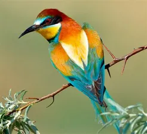
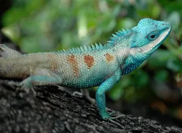
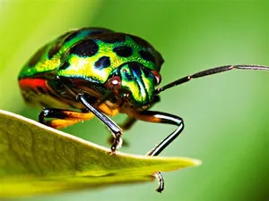
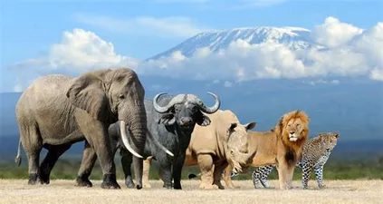

AVES

REPTILES

INSECTOS

 PECES
PECES
¿Qué es un animal? Para que un organismo se clasifique científicamente como animal deben tenerse en cuenta características a nivel celular, morfológico y fisiológico.
No existe una definición breve para los animales, así que pasemos de una vez a ello.
Los animales son organismos pluricelulares, heterótrofos, con células sin pared celular, con un sistema nervioso capaz de responder a estímulos externos, con células
organizadas en tejidos y con la presencia de blástula durante su desarrollo embrionario.
Bajo esta definición se clasifica a los organismos que cumplen con la mencionada descripción bajo el Reino Animalia. La evolución se construye a partir de lo que ya existe
y es así como el Reino Animalia es el grupo evolutivamente más nuevo. Este es el reino al final de la historia evolutiva.
El humano es entonces un animal que depende por completo de los reinos que lo preceden. Dependemos de las plantas, los hongos, las algas y de las bacterias. Los primeros
animales evolucionaron en el mar durante el período Cámbrico, aproximadamente hace 525 millones de años. El grupo de los animales se trata del reino más grande de todos
Los seres vivos. La mayoría son animales invertebrados y los más fuertes son cordados.
PECES